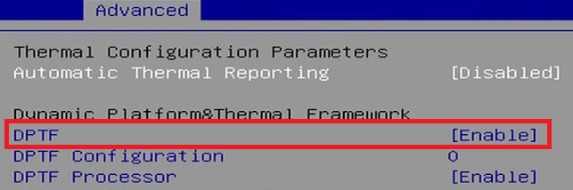

Modern x86 CPUs employ a number of features
to balance performance, energy, and thermal efficiency.
By default, Clear Linux OS prioritizes maximum CPU performance, assuming that
the faster the program finishes execution, the faster the CPU can return to a
low energy idle state. It is important to understand and evaluate the impact
of each feature when troubleshooting or considering changing the defaults.
C-states and P-states are both CPU power saving mechanisms that are entered
under different operating conditions. The tradeoff is a slightly longer time
to exit these states when the CPU is needed.
Hardware enters a C-state when the CPU is idle and not executing instructions.
C-states decrease power utilization by reducing clock frequency,
voltages, and features in each state. Although C-states can typically be
limited or disabled in a system’s UEFI or BIOS configuration, these settings
are overridden when the intel_idle driver is in use.
To view the current cpuidle driver run this command in a terminal:
cat/sys/devices/system/cpu/cpuidle/current_driver
For troubleshooting, C-states can be limited with a kernel command line boot
parameter by adding processor.max_cstate=N intel_idle.max_cstate=N
or completely disabled with idle=poll.
Note
processor.max_cstate=0 is changed to a valid value by the
kernel: processor.max_cstate=1.
intel_idle.max_cstate=0 disables the Intel Idle driver rather
than set it to C-state 0.
The CPU can enter a P-state, also known as Intel SpeedStep® technology on
Intel processors or AMD* Cool’n’Quiet* technology, while it is active
and executing instructions. P-states reduce power utilization by adjusting CPU
clock frequency and voltages based on CPU demand. P-states can typically be
limited or disabled in a system’s firmware (UEFI/BIOS).
Intel® Turbo Boost Technology, found on some modern Intel CPUs, allows
cores on a processor to temporarily operate at a higher than rated CPU clock
frequency to accommodate demanding workloads if the CPU is under defined power
and thermal thresholds. Intel Turbo Boost Technology is an extension of
P-states, so it can be impacted by limiting C-states or P-states.
Intel Turbo Boost Technology can be disabled in a system’s UEFI/BIOS or in
Clear Linux OS:
The CPUFreq subsystem in Linux allows the OS to control
C-states and P-states
via CPU drivers and governors that provide algorithms that define how and when
to enter these states.
Linux uses the Intel P-state driver, intel_pstate, for
modern Intel processors from the Sandy Bridge generation or newer. Other
processors may default to the acpi-cpufreq driver which reads
values from the systems UEFI or BIOS.
To view the current CPU frequency scaling driver, run this command in a
terminal:
Clear Linux OS sets the CPU governor to performance which calls for the CPU to
operate at maximum clock frequency. In other words, P-state P0. While this may
sound wasteful at first, it is important to remember that power utilization
does not increase significantly simply because of a locked clock frequency
without a workload.
To view the current CPU frequency scaling governor, run this command in a
terminal:
thermald is a Linux thermal management daemon used to prevent platforms
from overheating. thermald forces a C-state by inserting CPU sleep
cycles and adjusting any available cooling methods. This can be especially
desirable for laptops.
thermald is disabled by default in Clear Linux OS and starts automatically
if it detects battery power. Enable thermald manually by using
the systemd service by running the command:
sudosystemctlenable--nowthermald
For more information, see the thermald man page:
manthermald
ThermalMonitor is a GUI application that can visually graph and log
temperatures from thermald. To use ThermalMonitor, add the
desktop-apps-extras bundle and add your user account to the power
group:
Better thermal control and performance can be achieved by providing platform
specific configuration to thermald.
Linux DPTF Extract Utility is a companion tool to thermald,
This tool uses Intel® Dynamic Platform and Thermal Framework (Intel® DPTF)
technology and can convert to the thermal_conf.xml configuration format
used by thermald. Closed-source projects, like this one, cannot be
packaged as a bundle in Clear Linux OS, so you must install it manually:
Make sure your machine’s BIOS has DPTF feature and is enabled. It will usually be in the Advanced or Advanced>Power section of the BIOS.

Note
Intel DPTF requires BIOS support and is typically only available on
laptops.
Generate thermal configuration. thermald configuration files
will be generated and saved to /etc/thermal/ folder.
Intel® Turbo Boost Technology requires a PC with a processor with Intel Turbo
Boost Technology capability. Intel Turbo Boost Technology performance varies
depending on hardware, software and overall system configuration. Check with
your PC manufacturer on whether your system delivers Intel Turbo Boost Technology.
For more information, see http://www.intel.com/technology/turboboost
Intel, Intel SpeedStep, and the Intel logo are trademarks of Intel Corporation or its subsidiaries.